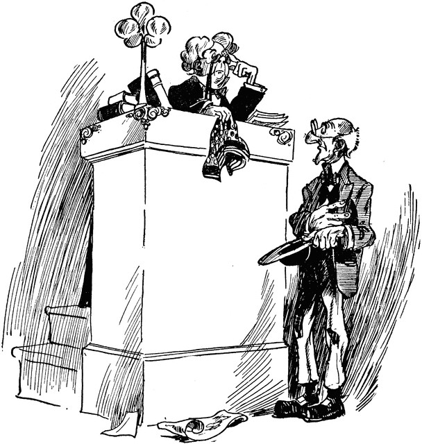

Statistical Fallacies and Surprising Results
Pam Chang and Yuechen Zhao
Harvard University STAT 201

Prosecutor's Fallacy
Simpson's Paradox
Penney's Game
Copyright © 2015 Yuechen Zhao and Pam Chang. All rights reserved.